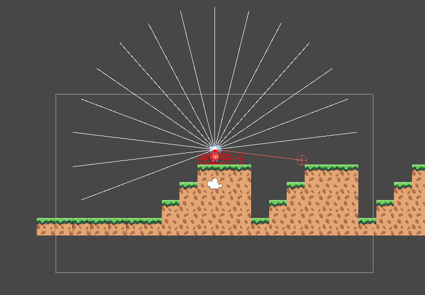

I am a Master’s student at the University of Lincoln researching NeRFs with focus on mesh extraction. I graduated Games Computing in 2022 in which I used the Unreal, Unity, and an engine built from scratch in SDL/C++ to create games. I am looking for a junior role where I can develop my software engineering skills or technical artistry.

An Unreal Material Effect which allows the simple recolouring of cosmetics, mimicking the customisation options in Destiny 2.
A long term project which focused on creating a test area for an agent to be trained using state-of-the-art machine learning techniques

A Post Processing effect in Unreal Engine that makes the render seem like it is being viewed on a CRT display.

A parkour platformer built as a small team for a 3-day game jam. I created the materials and models and designed the level.